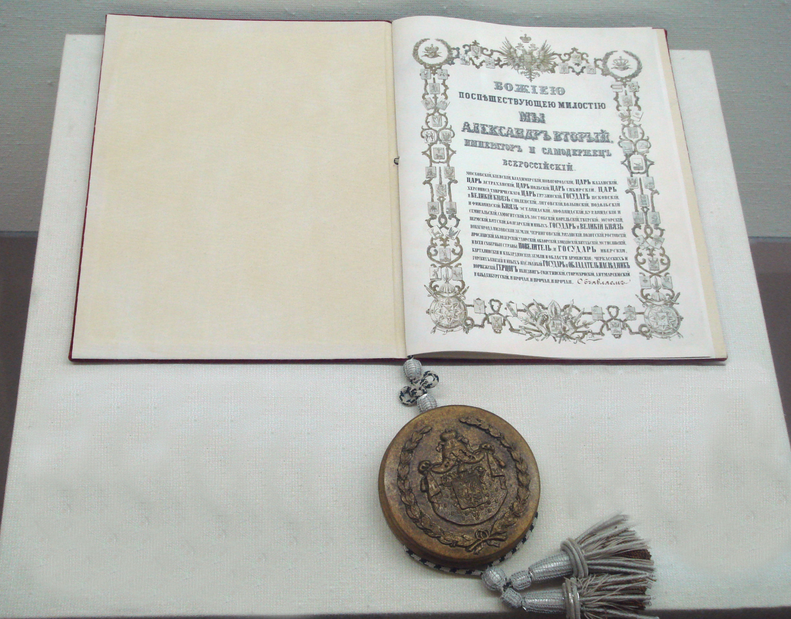

Петербургский договор с Японией (Основная информация)

Оригинал договора (Traité de Saint-Pétersbourg de 1875) написан на французском языке.
В тексте договора впервые даётся официальный перечень всех Курильских островов, от которых
Россия отказывается в пользу Японии в обмен на остров Сахалин. Договор был заключён 25
апреля (7 мая) в Петербурге. Российскую империю (император Александр II) представлял
министр иностранных дел А. М. Горчаков, Японию (император Мэйдзи) — посол Эномото Такэаки.
По договору, Россия передала Японии все принадлежавшие ей на ту пору Курильские острова,
от Урупа включительно и севернее, в обмен на официальный отказ Японии от территориальных
претензий на остров Сахалин.